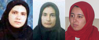

پذيرش > تریبون > مقالات > ما هرگز عليه هيچ امنيتي اقدام نکرده ايم...


 ما هرگز عليه هيچ امنيتي اقدام نکرده ايم... ما هرگز عليه هيچ امنيتي اقدام نکرده ايم...
4 آذر 1386 - نفیسه آزاد - نسخه قابل چاپ
مي نويسم اين بار ، اين بار با خشم مي نويسم، با خشم مي نويسم که فريادي باشد با دهان بسته در اين روزها.غمگين نيستم ديگر ، روزگار غمگين شدن از رفتن دوستان به اوين تمام شد ، امروز خشمگينم ، غمم را، بغضم را قورت مي دهم و ديگر تنها خشم باقي مانده است .خشم و فرياد.
ما را از چه چيزي مي ترسانيد آقايان ؟ از توهين ؟ از تحقير ؟ از زندان ؟ مگر نه آنکه ما پرورده شده هاي همين جامعه مرد سالاري هستيم که خانه هاي خواهران و مادرانمان از صدها سال پيش تا کنون زندان بوده است ،آن هم نه زنداني به پر افتخاري اوين ، که زنداني به سياهي و گمنامي سالهاي زندگي زناني که در آن دفن شده اند، نه مگر که ما هر روز و هر روز در همين زندگي صد ها بار تحقير مي شويم ، با همين قوانين که ما را انسانهايي نصفه نيمه مي داند، مگر در همين خيابانها ، به ما توهين نمي شود ، نه ! ما را از زندان و تحقير و توهين نترسانيد.
مگر ما همانها نيستيم که در ميدان هفت تير به مردم مي گفتيد اينها "يک مشت زن "فاسد هستند و ما را زير ضربات باتوم گرفتيد، چه شد که حالا شديم اقدام کنندگان بر عليه امنيت ملي؟
مگر مريم عزيز ما را به جرم نشر اکاذيب بازداشت نکرده ايد؟ اگر انعکاس اخبار خرم آباد و بازداشت روناک و هانا نشر اکاذيب است ، پس جرم آنها که اين اکاذيب را مرتکب شدند چيست ؟ اگر اين برخوردها انساني و قانوني و براي حفظ امنيت ملي است پس چرا از انتشار اخبار مجاهدت مردانه تان با اين يک مشت زن اينقدر خشمگين هستيد، بايد براي اين کار به ما مدال افتخار بدهيد.
مگر در خرم آباد ، زماني که "کارگاه کوچک ما را با اسلحه هايتان فتح کرديد"، به ما نگفتيد که شما مي خواهيد چهار شوهر داشته باشيد ؟ حالا من از شما مي پرسم ازدست دادن حق داشتن چهار زن اينقدر سهمگين است که با تمام قوا به جنگ ما آمده ايد؟ امنيت ملي مردانه تان آنقدر به ديه و ارث نابرابر و حق داشتن زنان صيغه اي نا محدود وابسته است که حتي حرف از دست دادن آن ، اينگونه پريشانتان مي کند ؟
زيستن در کنار زناني با حقوق برابر اينقدر ها هم بد نيست برادران ! نگاهي به خواهران و همسران و دختران خودتان بياندازيد، به دانشگاه مي روند، دکتر و مهندس و جامعه شناس و اقتصاددان و... مي شوند، کار مي کنند، بعضيشان همکاران خودتان هستند، اگر ما را غريبه و دشمن مي پنداريد ، از آنها بپرسيد ، بپرسيد آيا اين قوانين را عادلانه مي دانند؟ بپرسيد آيا اعتراضي به آن ندارند؟ بپرسيد و به چهره هاي آنان خيره شويد، ببينيد! تصوير زنان برابري خواه آنقدر ها هم که گمان مي کنيد هولناک نيست!
ما به همين قوانين پايبنديم، ما سهمي از قدرت نمي خواهيم، ما با کسي سر جنگ نداريم، ما در خيابانها و خانه هايمان (همانجا که شما امر کرده ايد در آن باقي بمانيم)، فقط و فقط درباره اين قوانين حرف مي زنيم، ما هرآنچه را که گفته ايم ، هرآنچه را که کرده ايم در معرض ديد همگان گذاشته ايم، شما چه مي کنيد؟ همين قانوني را که ما به آن پايبنديم –اما به بخشهايي از آن معترضيم- به اسم پاسباني از آن زير پا مي گذاريد، به خانه هايمان مي آييد ، جلسات کوچک مان را برهم مي زنيد، ما را به دادگاه و زندان مي بريد، هرگز تريبون يا رسانه اي براي بيان حرفهايمان به ما نمي دهيد، در زندگي خصوصيمان سرک مي کشيد... با اين حال ما هميشه به اين قانون پايبند بوده ايم، هميشه صداقت داشته ايم، هميشه به همين قانون پناه آورده ايم وهرگز بر عليه هيچگونه امنيتي اقدام نکرده ايم!
کمپين و خواسته هايش محدود به مريم و دلارام و ديگراني که مي شناسيد نيست، اگر کمي از اين ديوارها فاصله بگيريد، در دادگاههاي خانواده ، زير سقف خانه هاي همين شهر ، حاميان و معتقدان آن را مي بينيد، زناني که به آتش خشونت همين تبعيضات مي سوزند، خانه هاي ناامنشان ، غرور جريحه دارشده شان، عزم به تغيير است، نه برادر ! ما را از زندان و توهين و تحقير نترسان.اين داستان شروع غم انگيز برابري خواهي زنان اين سرزمين است ، که سهمشان را از بلا و جنگ و سختي ها همواره برابر با مردان داده اند، اين داستان شروع زيباي زناني است که مسالمت آميزترين روش را در برابر خشن ترين برخوردها در ميدان هفت تير برگزيده اند،داستاني که شروع شده است شايد آغاز کنندگاني مشخص داشت، اما ادامه دهندگاني نامشخص دارد، آغازش شايد که از پشت درهاي بسته موسسه اي بود در اين شهر ، ادامه اش در اوين نيست در قلبهاي زنان و مرداني است که به باور برابري رسيده اند، و بر پايانش تاريخ ميان ما و شما قضاوت خواهد کرد.
نوشتن از مريم و دلارام و روناک و هانا و ديگراني که به اين بهانه به زندان مي روند، تنها نوشتن از شخص نيست ، نوشتن از تاريخي است که اين بار تنها مردانه نگاشته نمي شود، نوشتن از روح حق طلبي است که در جسم اين زنان شعله مي کشد، نوشتن از صدايي است که از تاريخ و قانون کشورش برابري طلب مي کند، نوشتن از بهايي است که اين برابري خواهي طلب کرده است،نوشتن از خواسته هايي است که شايد برآورده شدنش در روزگاري ديگر روح آزرده خواهران و فرزاندان ما را آرام کند.
دستانمان خالي است، خانه هايمان شيشه ايست، بغضهايمان مجالي براي شکستن نيافته اند مدتهاست، خواهرانمان زنداني اند، روزهايمان انباشته از نا امني است،با اين حال هنوز و هميشه تا عوض شدن اين قوانين ، رد امضا هاي بيشتري بر بيانيه کمپين خواهيم نشاند.
ارسال به
بالاترین
،
توییتر
،
فریندفید
،
فیسبوک
در همين بخش :
 دهمین دورۀ مراسم تندیس صدیقه دولت آبادی ۱۳۹۲ دهمین دورۀ مراسم تندیس صدیقه دولت آبادی ۱۳۹۲
کارت پستالهایی به بهانهی هشت مارس و به یاد همهی مبارزین راه برابری
بیانیه بیش از 350 تن از مدافعان حقوق زنان به مناسبت روز جهانی زن؛ زنان هر روز فرودستتر میشوند
لباسی که برای تن ما دوخته اند! /اعظم بهرامی
چالشها و چشمانداز فعالیت مدنی زنان
ديگر بخش ها :
طرح یک میلیون امضا
|
مقالات
|
سایت نوشته ها
|
اخبار
|
گزارش كمپين
|
گفت و گو
|
علیه سکوت
|
كوچه به كوچه
|
نامه های شما
|
گزارش ویژه
|
گفتگو با اعضا
|
ویژه سالگرد کمپین
|
تصویر برابری
|
دل آرام علی
|
تریبون
|
مقالات
|
تاریخ شفاهی
|
خارج از چارچوب
|
کتابخانه
|
درباره کمپین
|
کمپین در شهرها
|
کمپین در بند
|
صدای تغییر
|
ویژه 22 خرداد
|
لایحه حمایت از خانواده
|
گالری
|
عشا مومنی
|
امیر یعقوبعلی
|
خدیجه مقدم
|
راحله عسگری زاده و نسیم خسروی
|
پروین اردلان،جلوه جواهری، مریم حسین خواه، ناهید کشاورز
|
زینب پیغمبرزاده
|
سعیده امین، سارا ایمانیان، محبوبه حسین زاده، ناهید کشاورز و همایون نامی
|
احترام شادفر
|
نسیم سرابندی زاده،فاطمه دهدشتی
|
وبلاگ مهمان
|
پرونده خرم آباد
|
دستگیری ها
|
مریم مالک
|
پرستو اللهیاری
|
مهرنوش اعتمادی
|
سمیه رشیدی
|
Other Languages
|
همراهان
|
«فراخوان کمپین ده روز با بهاره هدایت»
| English
|